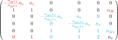

jaxrts.ionization.solve_saha
- jaxrts.ionization.solve_saha(element_list: list[~jaxrts.elements.Element], T_e: ~pint.registry.Quantity, ion_number_densities: ~pint.registry.Quantity, continuum_lowering: ~pint.registry.Quantity | None = None, exclude_non_negative_energies: bool = True) -> (<class 'pint.registry.Quantity'>, <class 'pint.registry.Quantity'>)[source]
Solve the Saha equation for a list of elements at a given temperature.
This function uses a similar approach to solve the set of equations as Jamal El Kuweiss’ many-ion-saha-equation tool by
Creating an abstract matrix which for each element consists of
Z + 1 rows of which have the solution of the Saha equation as diagonal entries, multiplied by -i and the free electron density n_e on the first off-diagonal element. These rows reflect that every neighboring number densities n_{i+1} and n_i fulfill the Saha equation
A row with Z + 1 entries of 1, ending with the diagonal entry, and the ion number density as last entry of the row. This guarantees that the individual ionization number densities add up to the full ion number density.
And additionally a final row, which contains the possible charge states for all ions, respectively, and, finally, the free electron number density n_e. For all not-specified entries, this matrix is sparse:

Throughout the functions, densities are converted to non-dimensional quantities. The scale has impact in numerical stability.
Finding the correct free electron density, which is given by the root of the determinant of the matrix.
Building a concrete matrix by inserting the free electron density
Finding the number densities for all ionization levels by solving the remaining set of equations by stripping the last row and column of the matrix, where the latter is the in-homogeneity of the set of equations.
The ionization energies are taken from the provided
jaxrts.element.Element, but we allow for a modification in form of continuum_lowering, which is an optional parameter.- Parameters:
element_list – A list of
jaxrts.element.Element.T_e – The electron temperature of the plasma.
ion_number_densities – A list of number densities for the individual ions. Has to have the same size as element_list.
continuum_lowering (Quantity, default: 0 eV) – A fixed value that is subtracted from all binding energies. Defaults to 0 eV.
exclude_non_negative_energies (bool, default = True) – If true, bound states for which the ionization energy is pushed into the continuum are removed from the calculation and do not appear with their Boltzmann factors in the Saha equations.
- Returns:
ionised_number_densities (Quantity) – A jax.numpy.ndarray of number densities per ionization state. It is ordered per-ion-species, and then with increasing ionization degree. I.e., [nIon0 0+, nIon0 1+, …, nIon1 0+, nion1 1+, …].
n_e (Quantity) – The free electron number density.
Z_mean (Quantity) – The mean free charge of each ion in the plasma.
See also
jaxrts.saha.saha_equationFunction used to calculate the Saha equation for two ionization degrees.